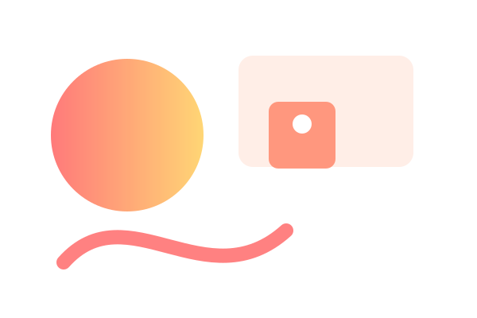

From chaotic days to structured blocks
A member shifted to two focused work blocks per day and reported +30% perceived productivity in 8 weeks.
I’m {{COACH_NAME}} ({{CREDENTIALS}}). I combine behavioral frameworks and pragmatic experiments so you gain routines that stick — not fleeting fixes.
Join the membership model tuned for progressive gains — monthly rhythms, steady metrics, clear next steps.

Truth: Short-term boosts fade. We prioritize small, repeatable habits that compound.
Truth: Personal context matters. Membership paths adapt with monthly assessments.
Truth: Systems and environmental design are the scaffolding motivation rides on.
Each pillar maps to weekly actions and measurable outcomes.
Monthly planning + micro-habits create a predictable cadence for progress.
Simple metrics — sleep, energy, focus blocks — help us iterate what works.
Environmental and behavioral tweaks that reduce friction and automate choices.
A member shifted to two focused work blocks per day and reported +30% perceived productivity in 8 weeks.
Through gradual sleep and light intake adjustments, daily energy dips were reduced across a month.
A membership cohort improved consistency by adopting one small habit per quarter.
Monthly cycles with weekly micro-tasks, monthly assessment, and a live group check-in. Coaching tiers add 1:1 sessions.
No. The program is built to meet you where you are and scale practices gently.
Minimal. We use a few simple signals you can log in under 2 minutes a day — enough to iterate without overwhelm.
Try the membership with a two-week trial. Practical guidance, community momentum, and measurable gains.